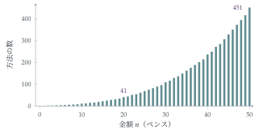

STEP I 1997、第1問
先に進む前に問題を読んでおこう。問題は STEP Support Programme の問題データベースにある： step.maths.org/questions/97-s1-q1
導入
これは本書でいちばん易しい問題に見える。可能性を書き並べればよいだけだからである。しかし、書き並べる作業はすぐに手に負えなくなる。イギリスの硬貨で \(20\)p を作る方法は \(41\) 通り、\(50\)p を作る方法は \(451\) 通り、£1 を作る方法は \(4563\) 通りもある。この問題が本当に求めているのは体系、すなわち、何も漏らさず、何も二重に数えないように数え方を整理する方法である。
その体系の背後には美しい数学がある。各硬貨は等比級数（geometric series）に対応し、\(n\) ペンスを作る方法の数はそれらの積の係数（coefficient）になる。そして同じ考え方をすべての自然数に一度に適用すると、整数論で最も奥深い話題の一つであるオイラー（Euler）の分割（partitions）の理論が得られる。
取りかかる前に
\(2\)p 硬貨と \(1\)p 硬貨だけを使って \(n\) ペンスを作る方法は何通りあるか。答えが \(2\)p 硬貨を何枚使うかだけで決まるのはなぜか。
\(2\)p 硬貨の枚数を決めれば、残りはすべて \(1\)p 硬貨でなければならない。したがって、\(2\)p 硬貨の枚数としてあり得る各値 \(0, 1, \ldots, \lfloor n/2\rfloor\) に対して、ちょうど1通りずつの方法がある。よって方法は \(\lfloor n/2\rfloor + 1\) 通りである。これを \(a(n)\) とおく。たとえば \(a(10) = 6\)、\(a(5) = 3\) である。
順を追って解く
段階 1 10ペンス
大きい硬貨から順に数え方を整理せよ。\(10\)p 硬貨は何枚使えるか。それを決めたとき、\(5\)p 硬貨は何枚使えるか。
\(10\)p 硬貨1枚：\(1\) 通り。
\(10\)p なし、\(5\)p 2枚：\(1\) 通り。
\(10\)p なし、\(5\)p 1枚：残りの \(5\)p 分を \(2\)p と \(1\)p で作る。これは \(a(5) = 3\) 通り。
\(10\)p も \(5\)p もなし：\(10\)p 分を \(2\)p と \(1\)p で作る。これは \(a(10) = 6\) 通り。
合計は \(1 + 1 + 3 + 6 = 11\) である。■
段階 2 一層ずつ積み上げる
\(5\)p、\(2\)p、\(1\)p 硬貨で \(n\) ペンスを作る方法の数を \(b(n)\) とする。\(b(n)\) を関数 \(a\) を用いて表すにはどうすればよいか。
\(5\)p 硬貨の枚数 \(k\) を選ぶと、残りの \(n - 5k\) ペンスは \(2\)p と \(1\)p 硬貨で作られる。したがって \[b(n) = a(n) + a(n - 5) + a(n - 10) + \cdots.\] これより次の表が得られる。
| \(n\) | \(0\) | \(5\) | \(10\) | \(15\) | \(20\) |
|---|---|---|---|---|---|
| \(a(n)\) | \(1\) | \(3\) | \(6\) | \(8\) | \(11\) |
| \(b(n) = a(n) + b(n - 5)\) | \(1\) | \(4\) | \(10\) | \(18\) | \(29\) |
同様に、\(10\)p 硬貨も使う方法の数を \(c(n)\) とすると \(c(n) = b(n) + b(n - 10) + \cdots\) であるから、\(c(10) = 10 + 1 = 11\)（段階1と一致する）、\(c(20) = b(20) + b(10) + b(0) = 29 + 10 + 1 = 40\) となる。
段階 3 20ペンス
最後に \(20\)p 硬貨を考える。これを使う（1通り）か、使わない（\(c(20)\) 通り）かのどちらかである。よって \[40 + 1 = 41 \text{ 通り}. \qed\]
構造に注目せよ。新しい硬貨を加えるたびに層が一つ増え、各層は、一つ前の層を新しい硬貨の額面の間隔で足し合わせたものになっている。£1 や £100 に対して、コンピュータがこの計算をどのように実行するか想像できるだろうか。
振り返り
最大の部分で整理する。 最も大きい硬貨の枚数を先に固定することで、数え方が体系的になった。
表を作る。 新しい硬貨を加えるたびに、前の行から計算される新しい行が加わった。これは動的計画法（dynamic programming）であり、コンピュータがこの種のものを数える標準的な方法である。
既知の場合と照合する。 表は \(10\)p の場合の \(11\) 通りを再現した。
背後にある数学
等比級数としての硬貨
この問題を代数に変える考え方を述べよう。使う \(5\)p 硬貨の枚数は \(0, 1, 2, \ldots\) であり、それぞれ \(0, 5, 10, \ldots\) ペンスに寄与する。これを次の級数として記録する。 \[1 + x^5 + x^{10} + x^{15} + \cdots = \frac{1}{1 - x^5}.\] 各硬貨について同じことを行い、掛け合わせる。 \[\frac{1}{(1 - x)(1 - x^2)(1 - x^5)(1 - x^{10})(1 - x^{20})} = \sum_n w(n)x^n.\] 括弧を展開すると、各項 \(x^n\) は各括弧から一つずつ項を選ぶこと、すなわち各硬貨の枚数を選ぶことで、合計額が \(n\) となる場合から生じる。したがって \(x^n\) の係数 \(w(n)\) は、\(n\) ペンスを作る方法の数にちょうど等しい。段階2の表は、この積を括弧一つずつ展開していたにすぎない。これは 第 9.4 節 の母関数（generating function）の考え方であり、その威力が発揮されるのが掛け算である。母関数の積は、選択の組合せを数えるのである。

分割
すべての正の整数が硬貨として使えるとしたらどうなるだろうか。このとき、順序を無視して \(n\) を正の整数の和として表す方法の数が分割数（partition number）\(p(n)\) である。たとえば \(4 = 3 + 1 = 2 + 2 = 2 + 1 + 1 = 1 + 1 + 1 + 1\) であるから \(p(4) = 5\) である。オイラーは1748年に \[\sum_{n \geq 0}p(n)x^n = \frac{1}{(1 - x)(1 - x^2)(1 - x^3)(1 - x^4)\cdots},\] であることを見抜き、これを用いて驚くべき恒等式を発見した。その一つは、\(n\) を相異なる部分の和として表す方法の数が、奇数の部分の和として表す方法の数に等しいというものである。（その証明は母関数を使えばわずか1行の代数計算である。演習で試してみよ。）
分割数は急速に増加する。\(p(10) = 42\)、\(p(100) = 190\,569\,292\) である。1918年、G. H. ハーディ（Hardy）とシュリニヴァーサ・ラマヌジャン（Srinivasa Ramanujan）は \(p(n)\) に対する驚くべき公式を発見した。それは無限級数であり、その第1項は \[p(n) \approx \frac{1}{4n\sqrt3}\,e^{\pi\sqrt{2n/3}}.\] である。これを検証するため、Percy MacMahon はオイラーの恒等式を用いて \(p(200) = 3\,972\,999\,029\,388\) を手計算で求めた。ハーディとラマヌジャンの級数の最初の数項は、誤差1未満で正しい答えを与えた。ラマヌジャンはまた、\(p(5n + 4)\) は常に \(5\) で、\(p(7n + 5)\) は \(7\) で、\(p(11n + 6)\) は \(11\) で割り切れることも発見した。このような規則性がほかに存在しない理由が解明されたのは、21世紀になってからである。
思考のスキル
対象が独立な選択の組合せで作られるとき、各選択を一つの因子とすれば、全体の大きさが \(n\) である対象の個数は、その積における \(x^n\) の係数になる。
これにより、数え上げが代数に変わる。大学では、これが数え上げ組合せ論（enumerative combinatorics）の基礎となり、また確率母関数（probability generating functions）が独立な確率変数の和を扱う仕組みでもある。
次の一歩
2種類の6。 STEP II 2012、第1問 に挑戦せよ。これは等比級数の積を用いて数える問題である。最後に、その係数が答えとなるような硬貨の数え上げ問題を述べよ。
相異なる部分と奇数の部分。 \((1 + x)(1 + x^2)(1 + x^3)\cdots\) が相異なる部分への分割の母関数であることを示せ。\(1 + x^k = \frac{1 - x^{2k}}{1 - x^k}\) を用いて、これが \(\frac{1}{(1 - x)(1 - x^3)(1 - x^5)\cdots}\) に等しいことを示し、オイラーの定理を導け。\(n = 6\) の場合に確かめよ。
公式。 \(1\)p、\(2\)p、\(5\)p 硬貨だけを用いて \(n\) ペンスを作る方法の数は、\(\frac{(n + 4)^2}{20}\) に最も近い整数であることを示せ。（まず小さい \(n\) で確かめよ。）
順序を区別する。 \(1\)p 硬貨と \(2\)p 硬貨を1枚ずつ投入口に入れて \(n\) ペンスにする方法は、順序を区別すると何通りあるか。（この数列には以前に出会っているはずである。）
さらに学ぶために
George Andrews & Kimmo Eriksson, Integer Partitions（Cambridge University Press）。学部生向けの、短く読みやすい入門書。
ポリア（George Pólya）, 「On picture-writing」, American Mathematical Monthly 63 (1956)。1ドルを両替する問題（方法は \(292\) 通りある）を用いて母関数を説明した、ポリアによる古典的な解説。
Robert Kanigel, The Man Who Knew Infinity（Abacus）。ラマヌジャンの生涯と、ハーディとの共同研究を描いた伝記。